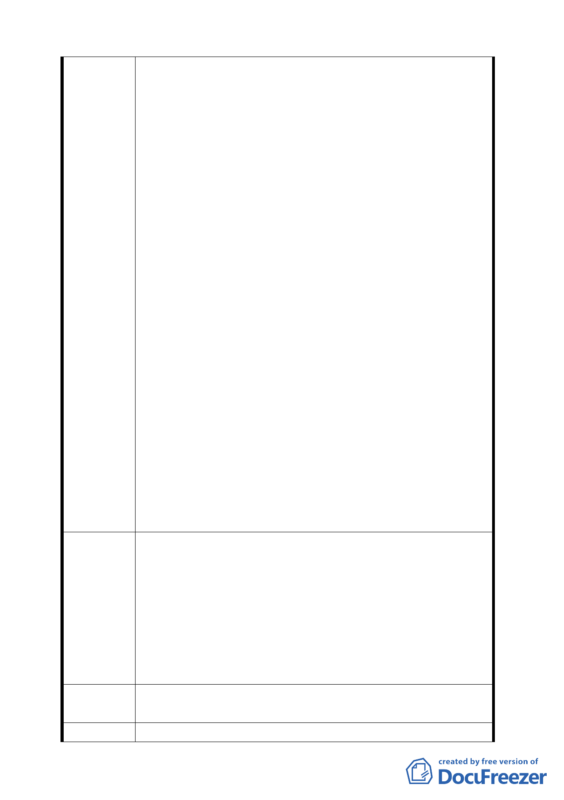

706.707.748.749.755 地號,土地鄰近新安路,附近住宅
林立亦有公車通達,地勢平坦土地坡度絕未超過 30%亦非
環境敏感地質,實無降低開發強度之必要,反應解除整體
開發之限制,准予單獨建築。
三、貴府擬降低本地區土地開發強度,顯然作業太過草率,將
嚴重損害民眾之權利。
四、貴府在民眾如有獲利時訂定許多回饋金之法令,例如住宅
區變更為商業使用須繳交回饋金,但本都市計畫變更將
造成民眾權益受損時卻不訂定任何補償辦法,顯然有失
公平。
五、本人當年購地時向貴府申請土地使用分區證明,土地編定
為住宅區,本人亦是以住宅區之價格購入,當時住宅區之
價格即遠高於附近保護區土地之價格,目前住宅區之市
場價格也遠高於保護區,貴府若將住宅區變更為保護
區，將降低我等土地出售時之成交價格,會嚴重損害民眾
權益。
六、由貴府所定 94 年度公告現值目前本人持有土地大多為
8800 元/平方公尺、建地目土地公告現值為 17000 元/平
方公尺、但相鄰保護區公告現值僅有 2400 元/平方公尺,
且陽明山其他地區住宅區之市價及公告現值都遠高於保
護區,本人信任政府之住宅區之編定,也相信政府公告現
值的訂定,才以遠高於保護區之價格購入土地,本於公平
及信賴保護原則貴府應給予適當之補償。
七、本人持有之建地目土地(地上並無房舍),已繳交多年地價
稅,貴府也應有所補償。
一、貴府應重新檢討每塊基地之條件,作為通盤檢討之基礎,
不宜全面降低其使用強度。
二、貴府應比照住宅區與保護區市價(或公告現值)之差額給
建議辦法
予現金補償,或比照臺北市容積移轉之規定,給予容積移
轉之權利,將變更為保護區或降低使用強度造成民眾權
益損傷之土地,給予適當補償。
三、對於已經繳交多年之地價稅,貴府應予於現金補償或作為
未來稅負之扣抵。
專案小組
審查結論
同編號 1。
委員會決議 同編號 1。
一三